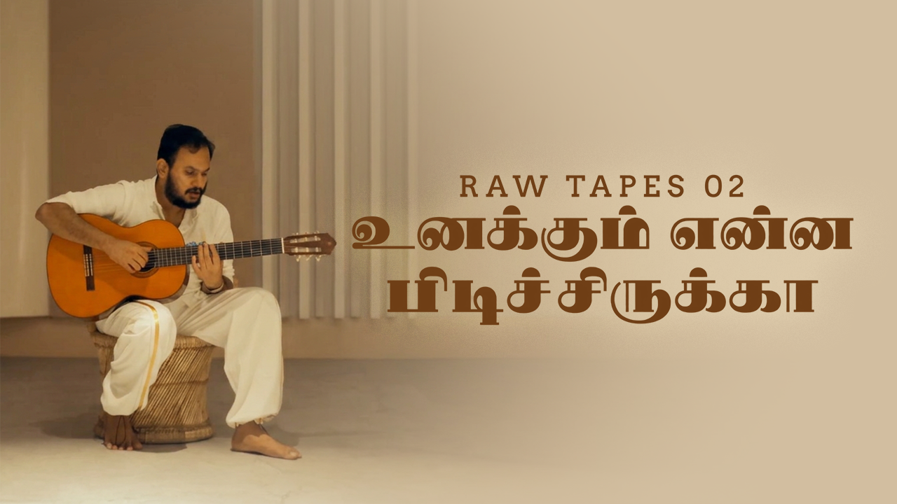
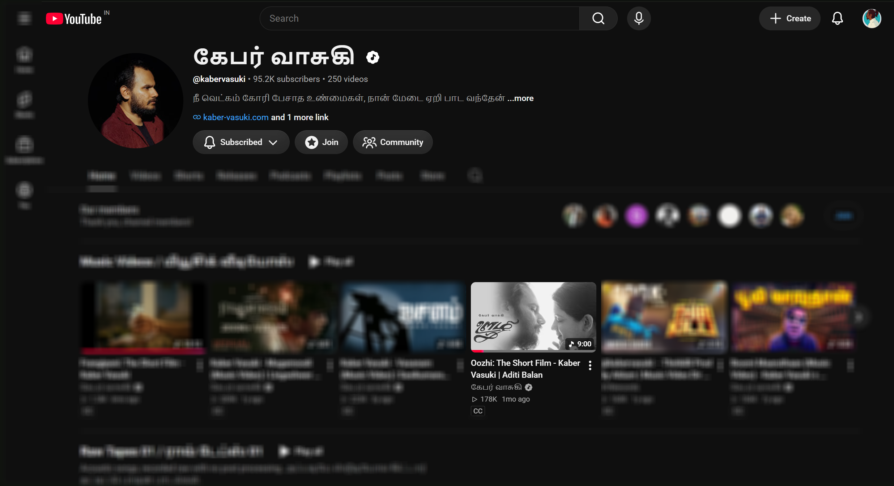
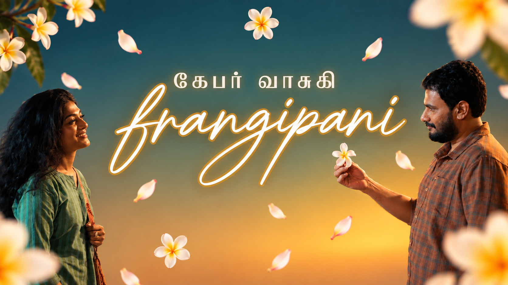
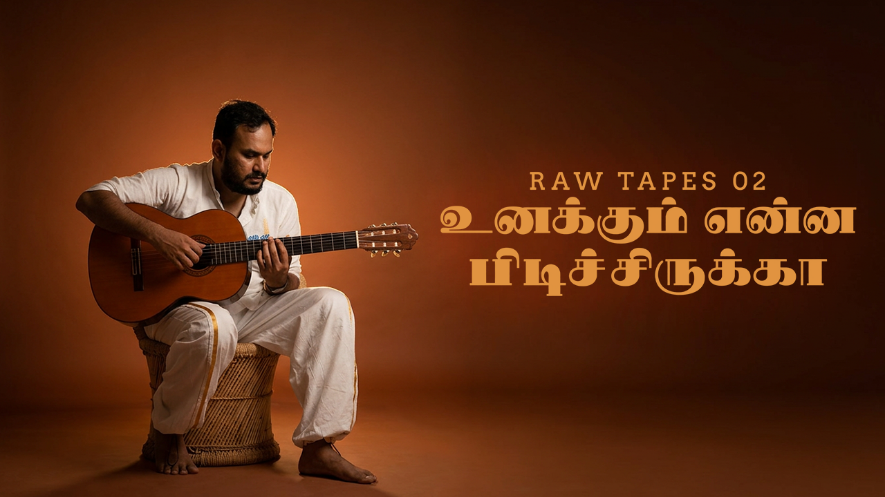

VISUAL STUDY / 01
KABER VASUKI
Pacha Perundhu
Music-led atmosphere • Generative visual exploration
I studied Fine Arts, moved into multimedia and design, and have worked across identity, graphics, film and series visuals, thumbnails, animation, UX and production workflows. I like getting into a brief, understanding what it needs to say, and figuring out how to show it clearly.
I can help with identity and logo work, campaign graphics, social posts, thumbnails, film and series visuals, visual research, and motion support. Some projects need a complete visual system. Others need someone to get stuck into the details and make the pieces come together.
My background started in Fine Arts and took me through multimedia, graphic design, animation, UX and game design. I enjoy working with images, type, layout and motion, and I am happy moving between a bigger concept and the small details that make it work.
That can mean a logo, a campaign, a film visual study, a thumbnail, a presentation, an animation or a visual explanation of something technical. I don't have one fixed process for all of them. I work out what the project needs and choose the tools accordingly.
A handful of visual experiments around music, characters, atmosphere and fandom. Just a small glimpse of things I've been exploring.
Music-led atmosphere • Generative visual exploration
Visual development • Acoustic palette study
Character & movement • Playful visual pacing
Storytelling & homage • Anime narrative rhythm
These are personal experiments rather than official artist collaborations. I enjoy working with music-led visuals and would be happy to explore more of that space, especially around Tamil independent music.
Beyond short-form visual experiments, I have also been involved in work connected to films, series, and narrative screen projects. My experience and interests extend into live-action visual storytelling, realistic aesthetics, mood exploration, and supporting creative production environments, not just animation or experimental AI studies.
Involved in visual tone development, atmosphere exploration, and cinematic visual support for the narrative project.
Visual research, historical worldbuilding assets, and environment tone explorations for the upcoming project.
Mood boards, lighting palette exploration, and conceptual visual frames supporting the series development.
Spatial framing studies, realistic visual storytelling support, and production research for the upcoming film.
Additional involvement includes title treatments, concept pitch frames, and production visual research across independent and studio narrative projects.
I've worked on logo development, visual identity, typography, colour, campaign graphics and other communication materials. A couple of these projects were for organisations with a very wide public presence, so the work had to be clear and usable beyond a single presentation.
I was part of the team behind the UPSC logo work, along with other visual communication and publication assets. My contribution was part of a wider team effort.
Identity explorations, bilingual typography balance, mark prototyping, and campaign touchpoint systems.
I worked on multiple logo explorations and visual assets for national-level campaigns with the Khadi and Village Industries Commission. The work involved concept development, typography, colour and refining different directions.
It is the way an organisation shows up: in a presentation, a campaign, a film, a thumbnail, a social post, or a physical space. I like finding the core idea, then helping it hold together across those touchpoints.
I also design YouTube thumbnails and promotional artwork. I like treating a thumbnail as a small poster. It needs to catch someone's eye, but it still has to tell them what they are about to watch. I've worked with different tones, from music and short films to gaming content.

Handcrafted torn paper collage with raw textures, custom Tamil title lettering, and cross-stitched border framing.

Intricate line-drawn cityscape doodles juxtaposed with portrait photography and warm glowing handwritten neon script.

Raw Tapes acoustic session artwork: warm paper tones, balanced negative space, and custom bilingual title typography.



PRODUCTION WORKFLOW & ART DIRECTION
I have been working with Lights On Media Studios, exploring and refining how AI-based tools can practically integrate into existing VFX production workflows. Rather than simply generating AI images, the focus is on understanding what these tools can actually do in production: building and testing node-based workflows in ComfyUI, motion and cinematic exploration in Higgsfield, and high-fidelity texture and detail refinement through Magnific.
The goal is understanding these tools, experimenting with their capabilities, and finding practical ways to integrate them into an existing production pipeline. This supports the artists and software already in place while keeping human visual judgement, art direction, and finishing at the centre.
The different channels have their own subjects and audiences. These are the places where my work or personal interests overlap with them. I would be happy to contribute where it makes sense.
This is where most of my visual design experience fits. I can help with branding, logo work, campaign graphics, social posts, presentations, thumbnails, visual research and design support for motion or video projects. I am comfortable working on both the main idea and the smaller design details around it.
This is where my game design background comes in. I have an M.Des in Game Design from NID Bengaluru and worked on a soccer mobile game and a combat racing game at Terrabyte Technologies. I'd enjoy researching and writing about games, game design, esports and gaming communities in India. I can also help explain game systems, mechanics and player behaviour visually.
I spend a lot of time self-hosting services, trying open-source alternatives, de-Googling as much as I can and using Obsidian for notes, writing and keeping a personal archive. I also follow what is happening with AI in the creative industry, including what is useful, what is changing and what artists should be thinking about. I enjoy researching and writing about this kind of thing, and would be interested in contributing as a writer or researcher, as well as helping with the visuals. You can explore notes in my archive directory ↗.
I read a lot of manga, keep up with ongoing series and watch plenty of anime. Since I come from an art and animation background, I also enjoy looking at character design, panel composition, movement, pacing and how a story changes when it moves from manga to animation. I'd be happy to help with research, writing, visuals or just a good conversation about a series.
I enjoy film and visual storytelling, and I understand the visual and technical side of how a film is put together. I have not worked as a full-time filmmaker, so I won't pretend otherwise. I can still help with visual concepts, graphics, storyboards, thumbnails, motion ideas and the design details that support a production.
I can get very absorbed in a subject. Sometimes that means pulling apart a visual system; sometimes it means spending an evening figuring out how to host an app myself or understanding why a game mechanic works. One thing often leads to another, and every now and then it turns into something useful. That's a pretty good description of how I learn.
M.Des, Game Design: National Institute of Design, Bengaluru
BFA, Fine Arts: Government College of Fine Arts, Chennai
Diploma, Multimedia: Image Institute
Adobe Creative Suite, Figma, Unity, Unreal Engine, Maya, ComfyUI, visual design, branding, UI/UX, game systems, animation review, and AI workflow experimentation.
Soccer mobile game and combat racing game; gameplay mechanics, AI balancing, animation checks, and playtesting.
Visual design, UI, UX flows, icons, and game assets for an educational interactive product.
Logo exploration, typography, colour, visual communication, and publication assets; team contribution behind UPSC logo work.
Exploring pipeline integration of AI tools (ComfyUI, Higgsfield, Magnific) into visual-effects workflows, building custom node processes, and supporting artists in production.
A NOTE FROM CHENNAI
I don't know whether there is an opening that fits this mix of work, and that's alright. I wanted to introduce myself properly instead of sending a generic application. If there is a role, project or freelance opportunity where I could be useful, I'd be glad to have a conversation. Even if the timing isn't right, thank you for taking a look.